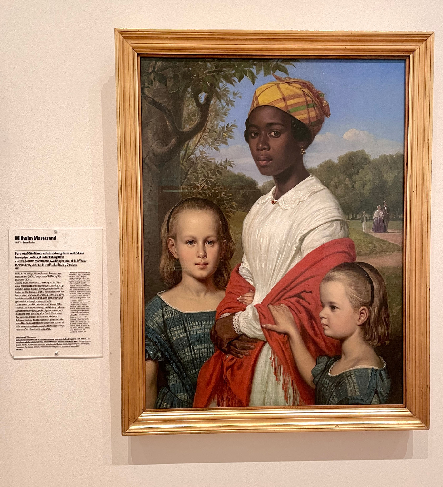

This month’s journal will take an even bigger step back, converging most explicitly with Yagi-san’s probing on involution as we both meet Karen Barad.
What does it mean to meet an-other?!
The question sounds obvious, but it is philosophically and relationally complex. When we look into a mirror, we see ourselves. We send something out (gestures, expressions) and that something is reflected back to us. Interpersonal relationships are also understood as a reflective, back-and-forth interaction with other discrete individuals. The success of such interactions depends on pre-existing internal traits like charisma, humility, preferences, and interpersonal skills like empathy and active listening. I call this the interpersonal model of intimacy. Its tenets are:
Against this classical model of relationship, I want to introduce the possibility of a diffractive model. I don’t claim to have already uncovered all of its principles, but share what I recognize in an attempt to spark further meaningful discourse around it.
To illustrate these jargons into daily terms, here are some example patterns of the diffractive model:
Understand that no one is fixed nor constant, but momentarily comes into a distinct being when intra-acting with us. What’s made distinct, and what’s excluded in those moments co-create reality. We must take responsibility and be accountable for the constitutive effects of these exclusions and inclusions.
No analogical reading of people-things-events (example: ”she is like her mother”) as it frames them through resemblance and fits them into pre-existing categories. This mindset is at the core of colonialism and oppression.
No "linear progression" of relationship (example: friend → lover → spouse). Categories are convenient markers for repetition, but do not define the relationship's essence.
Acknowledge power systems and how they shape and are shaped by us (emancipatory knowledge).
A (Super) Brief History of the Interpersonal Model
Ian Hacking (1983) traces binary thinking and representationalism to Democritus, who imagined the world as atoms and void. The void created a gap between appearances and reality. This belief in a gap is representationalism:
There exists a fully formed world (i.e. essentialism), where humans are outside observers, trying to “see” and “mirror” reality—never fully bridging the gap between reality and its representation.
This led to binaries (observer-observed, nature-culture, etc.) and to reflexivity, forming a separation ontology where individuals momentarily meet.
What was once imagined as empty void is now seen as quantum vacuum—a field of potential interactions. Here, particles are events within relational fields. Thus, I propose a pattern language grounded in relationality and inseparability.
A Diffractive Model
Diffraction is wave behavior. Waves can exist in multiple places and overlap, creating patterns of brightness (enhancement) and darkness (cancellation).
Thomas Young’s sketch of two-slit diffraction for water ripple tank. Source: Wikipedia
Illustration by Nicolle Rager Fuller for Karen Barad in Meeting the Universe Halfway.
A diffractive engagement is not self-reflective. It happens within and through each other, not at a distance.
Diffraction → insight of entanglement → no binaries → non-representationalism.
In quantum physics, particles don’t have a fixed identity until measured. This is indeterminacy. Identity and meaning emerge through intra-action and agential cuts.
Social identities also emerge through performance, not pre-existing traits. Foucault and Butler both argued that identity is produced through acts and norms.
Karen Barad unifies micro-macro, nature-culture, and physical-social dichotomies in Agential Realism. Meaning and matter co-emerge through intra-actions, supporting the Diffractive Model of Intimacy.
To conclude, my proposal for the entangled principles of intimacy again are:
These principles ensure the 3 patterns of intimacy proposed in journal 16 (Epistemic Visibility, Ontological Visibility, Generational Visibility), while shifting from oppression and exploitation to a response-able relational ontology.
しかし、まさにこの「右から左」が、Project Theory Probeで共有されている操作概念なのである。これは設計的プロセスの逆を行く、具体から抽象へと向かう志向である。Probeとは、「既知の世界の内側にあるまだ知られていない何か（＝Insight）」を探索する実践であり、ダブルダイヤモンドの左側に向かうような思考運動を伴う。
Many people may find the operation of “right to left” disorienting (with the exception of Arabic-speaking regions). This is because we are accustomed to diagrams and texts unfolding from “left to right,” and reversing this direction feels counterintuitive. The good examples of this are Gantt charts in project management and the Double Diamond process in designing, which maps the flow of thought from the concrete to the abstract. Going against this flow is often perceived as pointless or even annoying.
However, this very act of moving “right to left” is one of the operational concepts shared amongst Project Theory Probe writers. It represents a direction from the concrete toward the abstract which is the reverse of a design-oriented process. *Probing* is a practice of exploring “something unknown within the known world (i.e., insight)” which involves a cognitive movement directed toward the left side of the Double Diamond.
That said, there can be various interpretations of this “right to left” movement. Let us first clarify what it is _not_. It is different from backcasting, backward design, or reverse engineering. These methods still aim to arrive at a singular abstraction from the concrete, disregarding all the possibilities that could have realized on the far left. Nor is it entirely aligned with Hideshi Hamaguchi’s method of “bias breaking.” His method involves being aware of one’s own assumptions (biases) to reach innovation beyond them, but it leans somewhat toward correlationism (or anthropocentrism.) Instead, having followed Karen Barad’s arguments in the previous issue, we can approach the “left side” with a more realist and materialist perspective.
The “left side” is not about undefined infinite possibilities, but rather about the indeterminate phenomena that are in the midst of “time-space-mattering.” This site of “entangled becoming,” is the state before distinctions (or particle-ization) emerge—a state where all elements mutually permeate one another like waves.
In this view, the practice of moving “right to left” involves contemplating the background from which distinctions arise and attempting to dive behind into that background. We have touched upon this practice in the previous issue as “diffraction.” Please see Kitty's article for more lively details.
Practices like Projecation, previously featured in the PTP Journal, is an attempt to go beyond established distinctions such as self/other or roles, by facing the raw reality and incorporating what has been ignored until now. This could also be counted as one of the “diffractive” practices.
According to Niklas Luhmann, social systems are formed through the repetition of distinctions (where subsequent distinctions follow previous ones, thereby reducing complexity). Since you operate within this structure, you are naturally compelled to operate “left to right.” Activities that deviate from this (in order to explore other possibilities) may as well be called “anti-practices.” These practices do not imply anti-social behavior. Rather, they play an important role of metabolizing the society.
WHAT’S LOVE* GOT TO DO WITH IT?
Kitty Gia Ngân
A metaconversation about archiving.
Making A Fuss was my attempt to create a language for engagement within a system that is based on fear, control, and the rejection of engagement. I then introduced the concept, Daring To Archive, as a discursive-practice that furthers Fussing. Fussing usually emerges within a time-space, then subsides. The practice of Archiving helps create an ongoing mark of Fussing, continually performing into existence some meanings-and-materiality by reciting and reiterating. What is archived creates a story, a materiality, a reality. It can widen existing realities, enhance them, challenge and complicate them — which are great aspects of Diffraction.
Diffraction x Archiving
Donna Haraway was the one who first brought the phenomenon of Diffraction to the attention of social critical theorists, emphasizing that to be diffractive is a commitment to understanding which differences matter, how they matter, and for whom. In terms of archiving:
Archiving is not neutral: Choosing what to include, how to name it, what to exclude, or where to place it — are diffractive cuts that create meaning and value.
Archivists are not “collecting what’s already there,” but participating in the making of history and memory.
Differences matter — and must be accounted for:Whose voices are missing? Whose perspectives are centered? How is a name or category producing invisibility for some, while amplifying others? Which differences are we reinforcing or erasing by doing this? Which differences are being made to matter — and at what cost?
Archives create past-present-futures: Archives are world-making tools — they create and circulate memories, knowledge, marks of identity, and histories.
To be diffractive is not to accurately reflect the world as it is, but to trace patterns of difference, how and why certain differences emerge, and what effects they have — especially in terms of power, visibility, and meaning.
In 2022, I was part of a research cohort that examined museums, galleries, libraries, and public art in Denmark to diffract the complex practice called archiving. For example, we listened to archivists explain their struggles and debates on how to name this painting that’s placed inside the National Gallery of Denmark:

Although the nanny is the focal point of the painting, she had never been mentioned in the name of the painting. The painting, made by Wilhelm Marstrand in 1857, was nine years after the abolishment of slavery in the Danish West Indies, so it is most likely that the young nanny was born a slave. The painting was mostly called Portrait of Otto Marstrand's family, which includes the 2 daughters on each side and Otto Marstrand, the wife Annie, and their son Osvald who were strolling in the park in the back. It was only in recent years that the painting is renamed to Portrait of Otto Marstrand's Two Daughters and their West Indian Nanny, Justina, in Frederiksberg Garden.
This example, though, is still a work negotiated within a large institution and reworked by “professional archivists”. To further include other archivists, I am particularly aligned with Foucault and Butler on how power is not just repressive or held from above (as Marx suggested), but is everywhere, channeling through everyday practices, discourses, and performed norms. I was more interested in how the so-called mundane people and activities can ethically rework history-present-future.
A lead I had was in the works of Ursula K. Le Guin, called The Carrier Bag Theory of Fiction (1989), who proposed the first human tool was the bag instead of the spear — we learned to carry before we learned to kill — thereby reimagining a history that is accumulatively sustained by gatherers instead of hunters (or heroes). Mindy Seu then posits herself as a gatherer. It was a brilliant way of reconfiguring the past while opening up participation in the present to propose a more diffractive future. In tandem, I then posited myself as an archivist, breaking the gates that kept history-making practices only within institutions of power.
Postscript: The zine Daring To Archive (alongside Fuss and Werewolf) was introduced at Saigon’s Zine Fair by volunteers. It was later requested by an indie publisher for Kuala Lumpur’s international zine fair, and by a professor in Hanoi to use as examples at the national art university. Certain art stores continue to request them for sale, as they quickly sell out. A zine only costs a few dollars—the point isn’t that it makes any sense economically, but that its ideas circulate organically and prolifically within a cultural typography of disengagement, without any of my participation. That continues to astound (and challenge) me.
私の Obsidian は、ノートをつくり、相互にリンクする、そしてときどき検索するくらいの使われ方しかしておらず、そのほとんどの機能は眠ったままです。ライフハックらしい話はまったくなく、ひたすら Mac に文字を溜め込んだにすぎないのですが、それをしばらく続けているうちに、私自身が変化していることに気づきました。主題に注目してそれについて書く構えが次第に崩れ、気まぐれなことしか書かなくなっていった、という感じの変化です。と言ってもこれは、横着をするようになったということではありません。何かに注目するというモードから遠ざかることで、そこで失われていたものを、うまく捉えられるようになったのです。